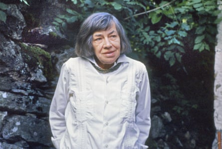

I first read Patricia Highsmith’s novels in the autumn of 1994. I was 20 and living in a room in her house in Tegna, Switzerland, that was plastered with bookshelves full of her first editions, organised in chronological order. Pat was 73 and knew she was about to die; she had been, it was rumoured, diagnosed with cancer or some other terminal disease. I was trapped in her world with her, trembling. She had weeks left to live and had spent so much time writing about how to get away with murder. I fantasised that she might try to kill me.
The story of how I ended up in that house begins a few months earlier, in Zurich, with me on a blue tram, on my way to dinner at the house of Anna and Daniel Keel, a couple I’d grown friendly with. Anna was a brilliant painter for whom I had been modelling since I was 17. Her studio smelled like oil paint, instant coffee and the brine in which floated the mozzarella balls that she ate while working. She was a genius. Anna’s husband, Daniel – or Dani, as we called him – was a book editor and the founder and owner of Diogenes Verlag, a Zurich-based publishing house that was (and still is) a major publisher of European fiction. He was brutally honest but had kind eyes and piles of books that he used as furniture.
Anna and Dani hosted what they called “interesting dinners” at their house, inviting random combinations of people they found fascinating. The night I arrived, all the doors were opened so the fresh air from their tree-filled garden could fill the dining room. Dinner was served on an oval wooden table covered with platters of pasta and cantaloupe and delicious prosciutto, along with many different bottles of French and Italian wines.
Dani mentioned that he was distracted by a work problem. He was looking for an English speaker with a European driving licence to take care of one of his authors in Ticino, the Swiss-Italian part of Switzerland. “I am desperate,” he whispered. “This is for someone important; I can’t really advertise the position.” The divorced man who had been doing the job for some months, Dani told me, had just called to say he was not going to do it any more; he had decided to become a monk.
Dani got up to open yet another bottle of chianti. Without thinking it through, I volunteered for the job. “I speak English,” I said, in English. “And I am licensed to drive in Europe and the US.” As Dani knew, I was about to go back to Spain to start my junior year of college, so he shook his head. But I insisted, explaining that all I needed to do was go to class for a month to meet the professors and collect the philosophy books assigned; after I had done that, I could help until my exams in December. (Attendance was not mandatory at my university.) My grandfather had been a theatre impresario and patron of the arts, and growing up, I had heard many stories about him helping all sorts of artists. When I eventually got to meet them, they seemed incredibly grateful for all my grandfather had done for them. So helping a writer in need seemed like the thing to do.
As he served the new wine to the group, Dani told me very quietly he was talking about Patricia Highsmith. I did not react. “How many of her books have you read?” he asked. “None,” I answered. He laughed loudly, and Anna, who had been listening from the other side of the table, said she was sure that I had at least watched Hitchcock’s film Strangers on a Train , which was based on one of Highsmith’s novels. I did remember having liked it on TV.
Later, after a few more bottles were emptied, Dani told me he would ask Pat if she might consider me. But given how young I was, he said, I was not to get my hopes up.
W ithin a week, Pat agreed to interview me. I took the train from Zurich through a heavy summer storm. On the way, I finished reading my first Highsmith novel, The Tremor of Forgery (1969). The man who had been taking care of her came to pick me up at the train station in Locarno, a Swiss town on the northern tip of Lake Maggiore, not far from her house. He looked old to me, not too tall, with glasses. He greeted me as if it were he, not I, who had finally arrived home after a long trip. We ran into a cafe, and over a quick cup of coffee, he told me about his months with Pat. He talked about her irritability, how difficult it could be to deal with her temper, and her health issues. He spoke about his reasons for moving into a monastery and his hope of finding peace. Our conversation scared me a bit; he seemed to be in the midst of an existential crisis, and he disclosed far too much to me, a 20-year-old stranger.
“Pat is an amazing writer,” he said. “So imaginative. But she does not like people. You will feel you are bothering her, but don’t think it is something you did. She is like that.”
I found his description of Highsmith perplexing. How can someone so isolated write so well about human nature, I thought. I could see, touch and almost smell the characters in the novel I had just finished. I felt as if I were still with Howard Ingham – the main character – in Tunisia, questioning the absurdity of our moral codes, rather than having coffee with a future monk on an unpleasant, rainy summer day.
The future monk seemed on the verge of tears as we got into an old Volkswagen Polo to drive to her house. Tegna is only three miles from Locarno, but those 10 minutes felt long. It had stopped raining, but it did not feel like August. He dropped me off at the door, yelled “Good luck!” without getting out of the car, and quickly backed down the driveway. I straightened my wet, wrinkled dark-blue dress.
The house in front of me was a one-floor brutalist structure made of large bricks. It looked like the letter U. Highsmith had designed it in the late 1980s with the help of an architect from Zurich. It was her dream house (as in, she had literally dreamed it), similar to one she describes in Strangers on a Train. In the book, though, the shape is a Y. I liked how the house’s hard lines contrasted with the beautiful valley, and that, by European standards, it was quite far away from other houses. The concrete blocks, which had once been white, looked dusty. The garden was full of bushes and leaves. The effect was uncanny.
Highsmith opened the door before I rang the bell, as if she had been waiting behind the curtains. She was shorter than me, very thin, petite. Wearing a sweater and oversized jeans, her greasy grey fringe partially hiding her face, she looked unfriendly. She shook my hand in silence, then said: “Thank you for coming.” I closed the door and followed her into the house. Without turning around, she offered beer or tea; I asked for water. She looked fragile, but she moved quickly. She told me to sit on a large white sofa covered with colourful cushions and blankets, then disappeared into what I guessed was the kitchen.
Alfred Hitchcock’s Strangers on a Train (1951), based on Highsmith’s 1950 novel of the same name.Photograph: Allstar Picture Library/Alamy
It was a cosy living room. I stared at the bookshelves around me. An orange cat crossed the room, ignoring me. On the coffee table, I spotted a European magazine opened to a feature on the 100 best living writers. Pat was right below Gabriel García Márquez. She finally returned with my water, moving as stealthily as the cat had.
She sat down in a chair across from me and asked: “Do you like Hemingway?”
She looked me in the eyes for the first time. I drank some of my tepid tap water. I knew the question was important. But I did not know anything about Pat or her life history. I did not know her tastes, or her relationship with other 20th-century North American writers. I did not even know she had lived in New York and Paris. I had read only that one book by her, just before on the train. I set my glass on the table, knowing I was running out of time, like in a gameshow, and I decided it was a heads-or-tails choice. I could not guess the right answer, I reasoned, so I might as well tell the truth. “No,” I answered, as if putting my last chip down on the roulette table.
“I HATE Hemingway!” she screamed.
She stood up and walked to the door to show me out. Is that the entire interview, I wondered, following her. I had a thousand questions about the job, the daily tasks, the car, the salary, the conditions. But I didn’t dare open my mouth. She thanked me again for coming and told me she would call Dani as soon as possible to convey her decision. She shook my hand, then quickly slammed the door behind me.
The Volkswagen reappeared as I walked down the driveway. To get in, I had to pick up a large pile of mail on the seat that had not been there 15 minutes earlier. The future monk told me he had known the interview would be short, but not that short. “Maybe she did not like me?” I asked.
“The next train to Zurich leaves very soon, so I have to rush you back to Locarno,” he said, ignoring my question. He looked worried; I thought he was wondering if Pat would ever find someone to replace him, and if he would be capable of leaving her alone without feeling guilty. I did not say anything. I stared at the 40 or so envelopes I was holding, all different sizes and with various coloured stamps on them. Most were simply addressed “Patricia Highsmith, Switzerland.”
O n the long train ride back to Zurich, I dreamed about orange cats, the Tunisian heat and the U-shaped house swallowing the pensive assistant I’d met. I was sure I would never again see the mystery-novel author who received mail that didn’t even include an address. And I knew it would take a while to get over the intensity of our brief encounter.
A few days later, though, as I was about to leave for the airport to return to Madrid to start university, Dani called me at my boyfriend’s house. “Pat wants to know when you can start,” he said. “This is a miracle!” He sounded relieved.
I said I could be in Tegna by late October. My boyfriend was going to be doing his military service in Switzerland, so he could visit me or we could meet somewhere on his days off. Dani told me to call him once my travel plans were confirmed, and thanked me over and over.
“Just thank the fact that I don’t like Hemingway,” I said. Dani laughed and said that he and Anna would come visit once I was installed.
A s promised, I made it back to Tegna a couple of months later, after flying to Zurich then taking four trains. The red one-car train that chugged from Locarno to Tegna seemed like a toy in a set made just for me. The arrangements had all been made so fast that I did not have time to understand what I was getting into. I came wearing my long coat, heeled boots and black hat, ready for a literary adventure.
Inside Pat’s house, a woman who had been helping around the home waited, impatient to leave. She and the cleaning lady would now come as little as possible. Pat showed me to my room. It was big and had a queen-size bed. She pointed to the bookshelves with all her first editions “in order”. That’s when I told her I had read only The Tremor of Forgery and had loved it. She said that in her opinion it was by far her best novel, so from now on her books would just disappoint me. This turned out not to be true: Edith’s Diary soon became my new favourite. But I understand why Pat, a queer person who never felt accepted by society (and who had a hard time accepting her own queer self), preferred The Tremor, a book about the need to question the moral codes we are handed, to all her other work.
The shelves in my room also held autographed books by, and biographies of, her friends, like Graham Greene (the ones from Truman Capote were out in the living room), as well as many volumes about Marlene Dietrich, with whom she was obsessed. Pat’s personal and literary notebooks were stowed in closets and shelves right outside my room. She told me she had written almost every day for over 50 years.
My room was freezing. It had large French doors leading out on to a courtyard, on the other side of which was Pat’s room. Her curtains were open, so I could see the single bed and writing desk in her messy bedroom. This voyeuristic setup also, of course, allowed her to see me and my room. She left me to unpack. I had no idea what was expected of me other than my presence. I came back into the living room, but she was in her room, typing. When she finally emerged from her room for dinner that first night, I followed her into the kitchen. She boiled water in a pot and added a bouillon cube. She asked me if I wanted supper, and I nodded, so she added another cube. That was dinner. She served herself a large mug of dark beer from a box she kept in the pantry and announced that the next day, she would teach me how to go to the supermarket.
Cate Blanchett in Carol (2015), an adaptation of Highsmith’s lesbian romance The Price of Salt (1952).Photograph: Moviestore/Rex/Shutterstock
I read Strangers on a Train later that night, lying in bed. I could see, across the courtyard, Pat moving around in the dark of her room with a torch. I did not understand why she was using a torch when the electricity worked just fine. It was unnerving, but I was too absorbed by the novel to question her strangeness.
The next day, I became the driver of the Volkswagen. I was a new and terrible driver, but Pat was very enthusiastic about my driving, probably because I went so slowly, which she said used less petrol. We went to the supermarket and bought soup cubes, beer boxes and food for the cat, which, Pat said, ate raw cow offal that the butcher was kind enough to reserve for her. She told me I would go shopping by myself once a week to pick up these things. We also got cheap bologna, white sandwich bread and six small apples. She introduced me to the butcher, who kept repeating “Charlotte” (the name of Pat’s cat) with a funny Italian accent. Pat paid with cash and brought used plastic bags to avoid paying for new ones. I was trying to remember everything and did not realise I was going to starve unless I bought my own beer for calories.
I soon discovered that a neighbour stopped by every few days with minestrone soup or chicken stew, which she made at her home, since Pat did not allow her to cook in the house. Each evening, we would “dine” together at seven o’clock. We served ourselves in the kitchen and then, since the dining table was covered with unopened mail and other clutter, we unearthed a couple of place mats from beneath the junk and sat down. The room was dimly lit at all times, and Pat barely tasted those meals – her bowl was usually empty or had only a little broth. But she always brought a litre of beer to the table.
I would eat slowly, trying to match her lack of appetite, and ask many questions that she enjoyed answering. She never offered me any beer and seemed surprised that I did not bring my own. She told me the doctors had forbidden her from taking her favourite poison (whisky), but I found a bottle of scotch hidden in the kitchen, and it kept getting emptier, even though she told me it was just for visitors (who never came). She’d had to quit smoking and was not supposed to drink at all because of her health. (Whatever was wrong with her seemed to be a secret, but Anna had implied it was cancer.) She was clearly used to drinking as much as her characters do; they sometimes comment that their liquor servings are “smallish”.
At dinner a few days later, I asked if she had a computer, and she told me she still wrote all her work, and all her letters, on the same typewriter she had used to write Strangers on a Train at Yaddo, the artists’ colony in Saratoga Springs, New York. Hitchcock’s decision to adapt that novel into a 1951 film had changed Pat’s life. She had been making ends meet by writing comic books and taking other low-paying gigs, such as an editorial assistantship. When Hitchcock bought the rights to her novel anonymously – in order to pay less – Pat got $7,500. But more important than the money was the fact that, once the film was made, she became known, making it easier for her to meet people, get more writing jobs and publish books. This was why Pat kept using that typewriter, even though she had others, all of which looked prehistoric to me. “Superstition, I suppose,” she concluded.
Pat did not talk much. She did tell me that although Hitchcock’s adaptation had “destroyed” her novel, she was forever grateful to him. In Strangers on a Train, she explained, the perfect crime is successful; both antiheroes win. But at the time, Hollywood had a morality code – the Hays Code – which meant that evil could not go unpunished, and so Hitchcock had a screenwriter come up with a new ending. She did not blame him for this. She seemed to be proud that Hitchcock liked her novel the way she had written it.
Early the next morning, Charlotte woke me up meowing, as she would every morning. During the day, she slept somewhere or went hunting, but she always roused me at dawn. Pat had shown me how to slice the cow lungs we got from the butcher who kept saying “Charlo-TTe”. And now, every morning, Charlotte circled my legs, pushing impatiently as I prepared her breakfast. When I cut the lungs with the kitchen scissors, the alveoli would explode, popping like bubble wrap. It was an unsettling, disgusting sensation.
After, as I washed my hands with detergent, I would hear Pat’s radio crackle on. She listened to the BBC for an hour every morning before getting up. Some days, I could not hear the radio until a bit later, and I would fear that she had died. I dreaded the thought of having to find her dead. (One morning towards the end of my stay, Pat did not turn on the radio at all, and I spent hours listening for movement behind the closed door.)
Highsmith at home in Switzerland, 1985.Photograph: Dino Fracchia/Alamy
As Charlotte ate her breakfast, I would make myself a black tea. Dressed and ready to go in case Pat needed anything, I would read until I heard her come out of her room. Most days, she went briefly to the bathroom and then to the kitchen and then returned to her room, after which the typing would start. At that point, she was writing only letters, I believe. Sometimes she came to find me so she could share her plans, or ask me to get the mail because she was waiting for something or had something to send.
On days when it was clear she was not going to need me, I would volunteer to go to the post office, just so I could walk around Tegna and have a coffee at the tiny town bar. The post office always had mail for Pat, but the postal workers were not friendly. My guess is they had heard Pat was a lesbian with no family, so must have assumed that I, the young woman living with her, had to be some sort of well-paid lover. And to be fair, I did not look like a nurse. I understood why Pat had stopped going there long ago and did not allow those judgy postal workers near her house.
My walks allowed me to get fresh air, look at the mountains and take a break from the oppressive indoors. The house was depressing because Pat did not consider herself to be among the living. She explained that the magazine I saw during my interview had invited the 100 best authors alive to a celebratory event in Paris. “I obviously declined,” she told me. And I understood that she thought she was among the 100 best but did not consider herself to be really alive.
D ani and Anna called us on Sundays. At one point, Dani explained that Pat had to go over the galleys of her novel Small g: A Summer Idyll, and I had to fax him her corrections. She had finished the novel a few months back, but she made significant last-minute edits. Every day, Pat made me fax the same page several times as she made changes. She was a perfectionist and studied each page for hours. She called Small g, which is about Zurich’s gay scene, her last novel, so my guess is she wanted it to be a great one. I did not get to read it until several months after she died. I was impressed by how much she knew about the city’s gay community and by her realistic portrayal of the Aids epidemic.
Pat did not let me use her phone to call my boyfriend. Whenever he called, she told him I was not there. I did not dare confront her, even though I was counting on him visiting, even staying over occasionally. One day, I worked up the courage to ask her, and she told me that he could not enter her house or garden; if I met him at the town bar, I could not be gone for more than an hour, in case she needed me. My boyfriend and I decided he should not come, since I couldn’t even get away to meet him in Locarno. We just wrote letters. The same went for my friends and parents. A letter from Spain took 10 days to reach its destination, but she was clear that I could not occupy her phone line. When someone did call me, she would pick up the phone in her room, loudly clear her throat and announce she needed the phone for an urgent call, which she then never made.
I did not question her rules or the assertiveness with which she refused to let me out of her world or anyone in, insistent that nobody could interrupt her routine or distract us from her bitter wait. I was weak and submissive, because of a lack of experience and because of the constant fear that something might happen to her while she was on my watch. I obsessed over not bothering her, and shortened my walks around town, tortured by my sense of responsibility, worried that Pat was unwell and alone, or needed me to fax the same page yet another time. So I adapted to her ways, becoming just as isolated, always home with her or near her, accompanied by only her novels, waiting for something to happen. I was mesmerised by the perfect crimes she had created in her books, and given how angry at life she seemed, I wondered if she had ever tried to kill someone herself.
The only regular intrusion of the outside world into our claustrophobic existence was the Sunday phone call from Dani and Anna. Dani would talk to Pat for a bit, and then Anna would talk to me for 10 minutes. Anna could hear in my voice that I was not doing well, so she and Dani came to visit, as promised. They gave little notice of their plans, and afterwards Pat complained for days about having had to host them. They arrived late – “So rude,” she kept saying – and brought a gorgeous bouquet of two dozen tea roses. Pat told me to put them in a vase, whispering about how they had probably spent more than 500 francs on something that we would have to watch die. Dani was used to Pat’s insults and understood that aggression was her way of relating, so he just moved on to talking shop about Small g.
Dani got along with her, maybe because he could be just as impatient and abrasive. He had overseen her world rights for years. She respected him. Pat was on bad terms with all her previous editors. While they talked in the living room, Anna took me to my room, worried about the dark shadows under my eyes and my weight loss. “We knew this would not be easy,” she told me.
“I am fine, Anna,” I answered, trying to smile.
“You are living with a difficult person who is waiting to die, and you remind her of everything she can no longer have,” Anna consoled me.
Gwyneth Paltrow, Jude Law and Matt Damon in The Talented Mr Ripley, the 1999 adaptation of Highsmith’s 1955 novel of the same name.Photograph: Paramount/Allstar
Pat could not say no to Dani, so she allowed them to take me out to the only restaurant in town, where I ate a real dinner, including wine and zabaglione, a fluffy gift of hedonism and freedom that became my favourite dessert. They reminded me there was life out there, people to talk to, good food, laughter, air. I confessed that not being able to call anyone or have visits was hard, but I had got used to it. I told them I understood that old Pat had her ways but was not trying to hurt me.
I said the hardest rule to follow was her mandate that I keep the lights off at night because she thought electricity too expensive. That’s why she used a flashlight and gave me one to use, too. I had got used to fearing her flashlight reflecting across the patio, but I dreaded total darkness because of what that could mean. I found it puzzling that the most basic expenses worried someone who had so much money. She yelled at me if I turned on a light by accident or used too much water, too many stock cubes, too many paper napkins, too much fuel for her car. She gave me very little money for groceries and petrol, and I told them that she had not paid me and that I was starting to feel as if I preferred not to be paid. Her pathological obsession with saving money shocked me.
I also told Dani and Anna that I had been reading the first editions on Pat’s shelves in chronological order, during the day and by torch at night. I was in awe of her characters, human antiheroes, complicated souls. I was well into the Ripley saga by then and joked that maybe she would achieve the perfect crime by killing me even if she could not steal my identity. Later, as we were saying goodbye, Anna said something I didn’t expect: “It is obvious. Pat is just in love with you.”
I did not know it then, but Pat had written many years ago, in her diary, that there are no sexually satisfied killers. She wrote that around the time she was creating Ripley. It was obvious from the Ripley series that frustrated desire was the catalyst for crime in Pat’s world, and Anna telling me that Pat was upset and short with me because she might love me made me even more afraid. Like Ripley, Pat could be charming but also dark, possessive, irrational and impatient.
When I got back home from dinner, Pat was watching TV. She was upset that I had been gone for almost three hours and had missed half of the weekly BBC true-crime special we watched together. She told me that the show had given her ideas for her work, so she found it inspiring. I hated true crime.
We watched the rest of the show together in silence. I could not stop thinking about what Anna had said to me.
O nce or twice a week, I drove Pat to Locarno’s hospital for her treatments. They took a long time. As I waited, I read my philosophy homework because I did not want her to see me reading her books in public; she was uncomfortable with being recognised.
I did not know what kind of transfusions she got at the hospital (the fact that she had lung cancer did not become public until after her death), but they always made her feel better afterwards. Certainly, her mood lifted, though never for very long. She was private and worried about what others would say of her. Much later, I read that when she was young she had felt guilty about her gayness and so had hidden it, dating men and even trying psychoanalysis so she could marry a man, a fellow writer who was her good friend. All that negativity and frustration Pat radiated seemed to come from a deep guilt about being who she was. After her diaries became public, some articles noted that she had moments when she was able to accept being a lesbian and was unbothered by her significant drinking problem, but the Pat I knew had reverted to her shame.
Alain Delon in Plein Soleil (1960), an adaptation of Highsmith’s novel The Talented Mr Ripley.Photograph: Pictorial Press Ltd/Alamy
I left her in early December to return home to take my exams. I had reminded her of my departure date for weeks. She did not make other arrangements for someone to look after her, just asked me to stay. I explained that I could not miss my finals, and that my family expected me for Christmas in Spain, but she ignored me. She pretended she could write our lives as if we were in one of her novels.
O n our last night together, she avoided talking to me or even looking at me. When I put my bags by the door the next morning, I expected a hug, as if I were the granddaughter she never had; instead, she offered me her hand for the third and last time. Her eyes were wet. I asked her to sign a German edition of a book about her that Dani had given me. She simply wrote her name without a dedication or personal note. She was angry. I was abandoning her, she finally said, just like “others” had done. She handed me an envelope with the weeks’ worth of salary she owed me, then went to her room. I had to close the door behind me and walk to the tiny red train that took me to Locarno. I never saw her again.
On the train, I dreamed that I never made it home. When my parents called Anna, she called Pat, who said I had left the house to catch the morning train after she autographed my book and wished me the best. Soon, the police were telling my parents that I hadn’t made my flight and they couldn’t find me. I woke from the dream exhausted as my train was pulling into Zurich. I wiped the fog off the window with my hand to look at the city. Boring normal life felt so good, and I could not wait to be home, to get home alive.
After Christmas, I spoke with Dani, who told me that Pat’s health had deteriorated after I left, and she had been admitted to the hospital in Locarno. I do not think she ever returned home. She died there at the beginning of February. Part of me was guilty and ashamed to realise this, but I was glad I had not been there for her worst days. Dani invited me to her funeral, which took place in March on my 21st birthday, but I declined.
I t took me decades to digest my time with Pat. I did not want to think or talk about it. Eventually, I came to the conclusion that Pat had not been in love with me, and had not, of course, been trying to kill me, but I do think she loved and hated the fantasy of being me: young, positive, loved, hopeful, straight, healthy, maybe even happy.
In late 2022, I returned to Tegna to visit the house where I had lived with Pat for those few weeks. She had told me that, after her death, it would be made into a museum dedicated to her life and work. That did not happen. Instead, the house is surrounded by the weekend homes that popped up around it, and today a family lives there with a lot of useless stuff everywhere. From the manicured garden, I saw that the foyer that led to my old bedroom was now filled with toys. And a swimming pool had been installed in the courtyard that formed the U, where Pat and I used to look across into each other’s rooms. I felt happy that she did not live to see this. We will miss the good things that happen after we die, but we will be spared some major disappointments. The house Pat dreamed up did not have a pool.
This is an edited version of a piece that appeared in The Yale Review